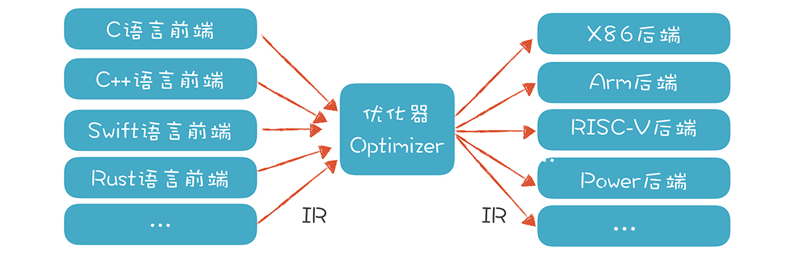

- 00 开篇词 为什么你要学习编译原理？.md.html
- 01 理解代码：编译器的前端技术.md.html
- 02 正则文法和有限自动机：纯手工打造词法分析器.md.html
- 03 语法分析（一）：纯手工打造公式计算器.md.html
- 04 语法分析（二）：解决二元表达式中的难点.md.html
- 05 语法分析（三）：实现一门简单的脚本语言.md.html
- 06 编译器前端工具（一）：用Antlr生成词法、语法分析器.md.html
- 07 编译器前端工具（二）：用Antlr重构脚本语言.md.html
- 08 作用域和生存期：实现块作用域和函数.md.html
- 09 面向对象：实现数据和方法的封装.md.html
- 10 闭包： 理解了原理，它就不反直觉了.md.html
- 11 语义分析（上）：如何建立一个完善的类型系统？.md.html
- 12 语义分析（下）：如何做上下文相关情况的处理？.md.html
- 13 继承和多态：面向对象运行期的动态特性.md.html
- 14 前端技术应用（一）：如何透明地支持数据库分库分表？.md.html
- 15 前端技术应用（二）：如何设计一个报表工具？.md.html
- 16 NFA和DFA：如何自己实现一个正则表达式工具？.md.html
- 17 First和Follow集合：用LL算法推演一个实例.md.html
- 18 移进和规约：用LR算法推演一个实例.md.html
- 19 案例总结与热点问题答疑：对于左递归的语法，为什么我的推导不是左递归的？.md.html
- 20 高效运行：编译器的后端技术.md.html
- 21 运行时机制：突破现象看本质，透过语法看运行时.md.html
- 22 生成汇编代码（一）：汇编语言其实不难学.md.html
- 23 生成汇编代码（二）：把脚本编译成可执行文件.md.html
- 24 中间代码：兼容不同的语言和硬件.md.html
- 25 后端技术的重用：LLVM不仅仅让你高效.md.html
- 26 生成IR：实现静态编译的语言.md.html
- 27 代码优化：为什么你的代码比他的更高效？.md.html
- 28 数据流分析：你写的程序，它更懂.md.html
- 29 目标代码的生成和优化（一）：如何适应各种硬件架构？.md.html
- 30 目标代码的生成和优化（二）：如何适应各种硬件架构？.md.html
- 31 内存计算：对海量数据做计算，到底可以有多快？.md.html
- 32 字节码生成：为什么Spring技术很强大？.md.html
- 33 垃圾收集：能否不停下整个世界？.md.html
- 34 运行时优化：即时编译的原理和作用.md.html
- 35 案例总结与热点问题答疑：后端部分真的比前端部分难吗？.md.html
- 36 当前技术的发展趋势以及其对编译技术的影响.md.html
- 37 云编程：云计算会如何改变编程模式？.md.html
- 38 元编程：一边写程序，一边写语言.md.html
- 加餐 汇编代码编程与栈帧管理.md.html
- 用户故事 因为热爱，所以坚持.md.html
- 第二季回归 这次，我们一起实战解析真实世界的编译器.md.html
- 结束语 用程序语言，推动这个世界的演化.md.html
- 捐赠
20 高效运行：编译器的后端技术
前18节课，我们主要探讨了编译器的前端技术，它的重点，是让编译器能够读懂程序。无结构的代码文本，经过前端的处理以后，就变成了Token、AST和语义属性、符号表等结构化的信息。基于这些信息，我们可以实现简单的脚本解释器，这也从另一个角度证明了我们的前端处理工作确实理解了程序代码，否则程序不可能正确执行嘛。
实际上，学完前端技术以后，我们已经能做很多事情了，比如让软件有自定义功能，就像我们在15讲中提到的报表系统，这时，不需要涉及编译器后端技术。
但很多情况下，我们需要继续把程序编译成机器能读懂的代码，并高效运行。这时，我们就面临了三个问题：
1.我们必须了解计算机运行一个程序的原理（也就是运行期机制），只有这样，才知道如何生成这样的程序。- 2.要能利用前端生成的AST和属性信息，将其正确翻译成目标代码。- 3.需要对程序做尽可能多的优化，比如让程序执行效率更高，占空间更少等等。
弄清这三个问题，是顺利完成编译器后端工作的关键，本节课，我会让你对程序运行机制、生成代码和优化代码有个直观的了解，然后再在接下来的课程中，将这些问题逐一击破。
弄清程序的运行机制
总的来说，编译器后端要解决的问题是：现在给你一台计算机，你怎么生成一个可以运行的程序，然后还能让这个程序在计算机上正确和高效地运行？
我画了一个模型：

基本上，我们需要面对的是两个硬件：
一个是CPU，它能接受机器指令和数据，并进行计算。它里面有寄存器、高速缓存和运算单元，充分利用寄存器和高速缓存会让系统的性能大大提升。
另一个是内存。我们要在内存里保存编译好的代码和数据，还要设计一套机制，让程序最高效地利用这些内存。
通常情况下，我们的程序要受某个操作系统的管理，所以也要符合操作系统的一些约定。但有时候我们的程序也可能直接跑在硬件上，单片机和很多物联网设备采用这样的结构，甚至一些服务端系统，也可以不跑在操作系统上。
你可以看出，编译器后端技术跟计算机体系结构的关系很密切。我们必须清楚地理解计算机程序是怎么运行的，有了这个基础，才能探讨如何编译生成这样的程序。
所以，我会在下一节课，也就是21讲，将运行期的机制讲清楚，比如内存空间如何划分和组织；程序是如何启动、跳转和退出的；执行过程中指令和数据如何传递到CPU；整个过程中需要如何跟操作系统配合，等等。
也有的时候，我们的面对的机器是虚拟机，Java的运行环境就是一个虚拟机（JVM），那我们需要就了解这个虚拟机的特点，以便生成可以在这个虚拟机上运行的代码，比如Java的字节码。同时，字节码有时仍然需要编译成机器码。
在对运行期机制有了一定的了解之后，我们就有底气来进行下一步了，生成符合运行期机制的代码。
生成代码
编译器后端的最终结果，就是生成目标代码。如果目标是在计算机上直接运行，就像C语言程序那样，那这个目标代码指的是汇编代码。而如果运行目标是Java虚拟机，那这个目标代码就是指JVM的字节码。
基于我们在编译器前端所生成的成果，我们其实可以直接生成汇编代码，在后面的课程中，我会带你做一个这样的尝试。
你可能惧怕汇编代码，觉得它肯定很难，能写汇编的人一定很牛。在我看来，这是一个偏见，因为汇编代码并不难写，为什么呢？
其实汇编没有类型，也没有那么多的语法结构，它要做的通常就是把数据拷贝到寄存器，处理一下，再保存回内存。所以，从汇编语言的特性看，就决定了它不可能复杂到哪儿去。
你如果问问硬件工程师就知道了，因为他们经常拿汇编语言操作寄存器、调用中断，也没多难。但另一方面，正是因为汇编的基础机制太简单，而且不太安全，用它编写程序的效率太低，所以现在直接用汇编写的程序，都是处理很小、很单一的问题，我们不会再像阿波罗登月计划那样，用汇编写整个系统，这个项目的代码最近已经开源了，如果现在用高级语言去做这项工作，会容易得多，还可以像现在的汽车自动驾驶系统一样实现更多的功能。
所以，在22和23讲，我会带你从AST直接翻译成汇编代码，并编译成可执行文件，这样你就会看到这个过程没有你想象的那么困难，你对汇编代码的恐惧感，也会就此消失了。
当然，写汇编跟使用高级语言有很多不同，其中一点就是要关心CPU和内存这样具体的硬件。比如，你需要了解不同的CPU指令集的差别，你还需要知道CPU是64位的还是32位的，有几个寄存器，每个寄存器可以用于什么指令，等等。但这样导致的问题是，每种语言，针对每种不同的硬件，都要生成不同的汇编代码。你想想看，一般我们设计一门语言要支持尽可能多的硬件平台，这样的工作量是不是很庞大？
所以，为了降低后端工作量，提高软件复用度，就需要引入中间代码（Intermediate Representation，IR）的机制，它是独立于具体硬件的一种代码格式。各个语言的前端可以先翻译成IR，然后再从IR翻译成不同硬件架构的汇编代码。如果有n个前端语言，m个后端架构，本来需要做m*n个翻译程序，现在只需要m+n个了。这就大大降低了总体的工作量。

甚至，很多语言主要做好前端就行了，后端可以尽量重用已有的库和工具，这也是现在推出新语言越来越快的原因之一。像Rust就充分利用了LLVM，GCC的各种语言，如C、C++、Object C等，也是充分共享了后端技术。
IR可以有多种格式，在第24讲，我们会介绍三地址代码、静态单赋值码等不同的IR。比如，“x + y * z”翻译成三地址代码是下面的样子，每行代码最多涉及三个地址，其中t1和t2是临时变量：
t1 := y * z
t2 := x + t1
Java语言生成的字节码也是一种IR，我们还会介绍LLVM的IR，并且基于LLVM这个工具来加速我们后端的开发。
其实，IR这个词直译成中文，是“中间表示方式”的意思，不一定非是像汇编代码那样的一条条的指令。所以，AST其实也可以看做一种IR。我们在前端部分实现的脚本语言，就是基于AST这个IR来运行的。
每种IR的目的和用途是不一样的：
- AST主要用于前端的工作。
- Java的字节码，是设计用来在虚拟机上运行的。
- LLVM的中间代码，主要是用于做代码翻译和编译优化的。
- ……
总的来说，我们可以把各种语言翻译成中间代码，再针对每一种目标架构，通过一个程序将中间代码翻译成相应的汇编代码就可以了。然而事情真的这么简单吗？答案是否定的，因为我们还必须对代码进行优化。
代码分析和优化
生成正确的、能够执行的代码比较简单，可这样的代码执行效率很低，因为直接翻译生成的代码往往不够简洁，比如会生成大量的临时变量，指令数量也较多。因为翻译程序首先照顾的是正确性，很难同时兼顾是否足够优化，这是一方面。另一方面，由于高级语言本身的限制和程序员的编程习惯，也会导致代码不够优化，不能充分发挥计算机的性能。所以我们一定要对代码做优化。程序员在比较各种语言的时候，一定会比较它们的性能差异。一个语言的性能太差，就会影响它的使用和普及。
实际上，就算是现在常见的脚本语言，如Python和JavaScript，也做了很多后端优化的工作，包括编译成字节码、支持即时编译等，这些都是为了进一步提高性能。从谷歌支持的开源项目V8开始，JavaScript的性能获得了巨大的提高，这才导致了JavaScript再一次的繁荣，包括支持体验更好的前端应用和基于Node.js的后端应用。
优化工作又分为“独立于机器的优化”和“依赖于机器的优化”两种。
独立于机器的优化，是基于IR进行的。它可以通过对代码的分析，用更加高效的代码代替原来的代码。比如下面这段代码中的foo()函数，里面有多个地方可以优化。甚至，我们连整个对foo()函数的调用，也可以省略，因为foo()的值一定是101。这些优化工作在编译期都可以去做。
int foo(){
int a = 10*10; //这里在编译时可以直接计算出100这个值
int b = 20; //这个变量没有用到，可以在代码中删除
if (a>0){ //因为a一定大于0，所以判断条件和else语句都可以去掉
return a+1; //这里可以在编译器就计算出是101
}
else{
return a-1;
}
}
int a = foo(); //这里可以直接地换成 a=101;
上面的代码，通过优化，可以消除很多冗余的逻辑。这就好比你正在旅行，先从北京飞到了上海，然后又飞到厦门，最后飞回北京。然后你朋友问你现在在哪时，你告诉他在北京。那么他虽然知道你在北京，但并没有意识到你已经在几个城市折腾了一圈，因为他只关心你现在在哪儿，并不关心你的中间过程。 我们在给a赋值的时候，只需要知道这个值是101就行了。完全不需要在运行时去兜一大圈来计算。
计算机代码里有很多这种需要优化的情形。我们在27和28讲会介绍多种优化技术，比如局部优化和全局优化，常数折叠、拷贝传播、删除公共子表达式等，其中数据流分析方法比较重要，会重点介绍。
依赖于机器的优化，则是依赖于硬件的特征。现代的计算机硬件设计了很多特性，以便提供更高的处理能力，比如并行计算能力，多层次内存结构（使用多个级别的高速缓存）等等。编译器要能够充分利用硬件提供的性能，比如 ：
寄存器优化。对于频繁访问的变量，最好放在寄存器中，并且尽量最大限度地利用寄存器，不让其中一些空着，有不少算法是解决这个问题的，教材上一般提到的是染色算法；
充分利用高速缓存。高速缓存的访问速度可以比内存快几十倍上百倍，所以我们要尽量利用高速缓存。比如，某段代码操作的数据，在内存里尽量放在一起，这样CPU读入数据时，会一起都放到高速缓存中，不用一遍一遍地重新到内存取。
并行性。现代计算机都有多个内核，可以并行计算。我们的编译器要尽可能把充分利用多个内核的计算能力。 这在编译技术中是一个专门的领域。
流水线。CPU在处理不同的指令的时候，需要等待的时间周期是不一样的，在等待某些指令做完的过程中其实还可以执行其他指令。就比如在星巴克买咖啡，交了钱就可以去等了，收银员可以先去处理下一个顾客，而不是要等到前一个顾客拿到咖啡才开始处理下一个顾客。
指令选择。有的时候，CPU完成一个功能，有多个指令可供选择。而针对某个特定的需求，采用A指令可能比B指令效率高百倍。比如X86架构的CPU提供SIMD功能，也就是一条指令可以处理多条数据，而不是像传统指令那样一条指令只能处理一条数据。在内存计算领域，SIMD也可以大大提升性能，我们在第30讲的应用篇，会针对SIMD做一个实验。
其他优化。比如可以针对专用的AI芯片和GPU做优化，提供AI计算能力，等等。
可以看出来，做好依赖于机器的优化要对目标机器的体系结构有清晰的理解，如果能做好这些工作，那么开发一些系统级的软件也会更加得心应手。实际上，数据库系统、大数据系统等等，都是要融合编译技术的。
总结起来，在编译器中需要对代码进行的优化非常多。因此，这部分工作也是编译过程中耗时最长、最体现某个编译器的功力的一类工作，所以更值得引起你的重视。
课程小结
本节课，我们对编译器的后端技术做了概述。你了解到要做好后端工作，必须熟悉计算机体系结构和程序的运行时机制；还要从前端生成中间代码，然后基于中间代码生成针对不同平台的目标代码；最后，需要对代码做各种优化工作，包括独立于机器的优化和依赖于机器的优化。
刚接触编译技术的时候，你可能会把视线停留在前端技术上，以为能做Lexer、Parser就是懂编译了。实际上，词法分析和语法分析比较成熟，有成熟的工具来支撑。相对来说，后端的工作量更大，挑战更多，研究的热点也更多。比如，人工智能领域又出现了一些专用的AI芯片和指令集，就需要去适配。
编译器的后端，要把高级语言翻译成计算机能够理解的目标语言。它跟前端相比，关注点是不同的。前端关注的是正确反映了代码含义的静态结构，而后端关注的是让代码良好运行的动态结构。它们之间的差别，从我讲解“作用域”和“生存期”两个概念时就能看出来。作用域是前端的概念，而生存期是后端的概念。
其实在前面的课程中，我们已经涉及了少量的后端技术的概念，比如生存期、栈桢，因为我们要让脚本语言运行起来。但这个运行环境比较简单，脚本的执行也是简单的基于AST，所以性能是比较低的。但在后端部分，我们会实现一门静态编译型的语言，因此会对对运行期机制做更加深入的解读和实现。
如果能把后端技术学好，你对计算机底层运行机制的理解会更上一层楼，也会成为一名底子更加扎实的软件工程师。
一课一思
我们说编译器后端的任务是让程序适配硬件、高效运行。对于你所熟悉的程序语言，它的后端技术有什么特点呢？比如它采用了哪些技术使得性能更高，或者代码尺寸更小，或者能更好地兼容硬件？欢迎在留言区分享你的经验和观点。
最后，感谢你的阅读，如果这篇文章让你有所收获，也欢迎你将它分享给更多的朋友。
© 2019 - 2023 Liangliang Lee. Powered by gin and hexo-theme-book.